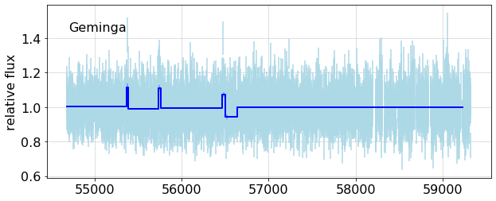
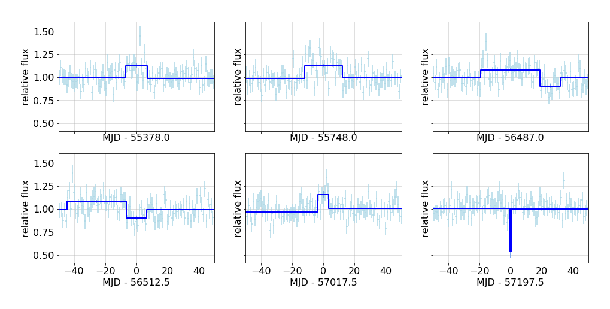
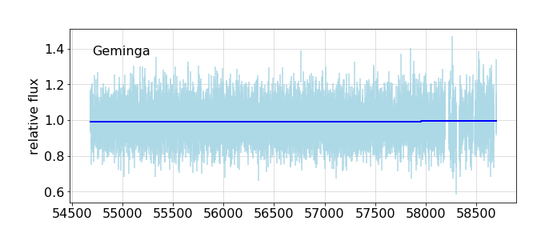

---

title: Geminga Analyses

keywords: fastai
sidebar: home_sidebar

summary: "Ongoing analyses"
description: "Ongoing analyses"
nb_path: "nbs/geminga.ipynb"
---
<!--

#################################################
### THIS FILE WAS AUTOGENERATED! DO NOT EDIT! ###
#################################################
# file to edit: nbs/geminga.ipynb
# command to build the docs after a change: nbdev_build_docs

-->

<div class="container" id="notebook-container">
        
    {% raw %}
    
<div class="cell border-box-sizing code_cell rendered">

</div>
    {% endraw %}

<div class="cell border-box-sizing text_cell rendered"><div class="inner_cell">
<div class="text_cell_render border-box-sizing rendered_html">
<p><strong> <code>wtlike</code> library functions used here</strong></p>
<ul>
<li><code>get_cells</code></li>
<li><code>simulate_cells</code></li>
<li><code>get_lightcurve</code></li>
<li><code>get_bb_partition</code></li>
<li><code>partition_cells</code></li>
<li><code>fit_cells</code></li>
<li><code>flux_plot</code></li>
</ul>

</div>
</div>
</div>
<div class="cell border-box-sizing text_cell rendered"><div class="inner_cell">
<div class="text_cell_render border-box-sizing rendered_html">
<h2 id="Introduction">Introduction<a class="anchor-link" href="#Introduction"> </a></h2><p>This notebook does not produce a module to add to the library, it a place to run, and report on analyses using the library. It uses local code, shown below.</p>
<p>This is also an exploration of this style of presenting code, and data analysis based on it.</p>
<h2 id="Geminga-analyses">Geminga analyses<a class="anchor-link" href="#Geminga-analyses"> </a></h2><p>Following Kerr's example, we use the source Geminga to verify that this analysis of data gives results consistent with its being constant. As you can see below, the BB analysis finds several breaks, which merit further checks. That is followed by a simulation using
Geminga's weight distribution and exposure. The run shown here finds one minor break, a change of 0.08%.</p>

</div>
</div>
</div>
    {% raw %}
    
<div class="cell border-box-sizing code_cell rendered">
<details class="description">
      <summary data-open="Hide Code" data-close="Show Code"></summary>
        <summary></summary>
        <div class="input">

<div class="inner_cell">
    <div class="input_area">
<div class=" highlight hl-ipython3"><pre><span></span><span class="k">def</span> <span class="nf">show_cache</span><span class="p">():</span>
    <span class="sd">&quot;&quot;&quot;</span>
<span class="sd">    ## Current Cache</span>
<span class="sd">    {the_cache}</span>
<span class="sd">    &quot;&quot;&quot;</span>
    <span class="n">config</span> <span class="o">=</span> <span class="n">Config</span><span class="p">()</span>
    <span class="k">with</span> <span class="n">capture_print</span><span class="p">(</span><span class="s1">&#39;contents&#39;</span><span class="p">)</span> <span class="k">as</span> <span class="n">the_cache</span><span class="p">:</span>                    
        <span class="nb">print</span><span class="p">(</span><span class="n">config</span><span class="o">.</span><span class="n">cache</span><span class="p">)</span>
    <span class="k">return</span> <span class="nb">locals</span><span class="p">()</span>
<span class="n">nbdoc</span><span class="p">(</span><span class="n">show_cache</span><span class="p">)</span>
</pre></div>

    </div>
</div>
</div>

    </details>
<div class="output_wrapper">
<div class="output">

<div class="output_area">


<div class="output_markdown rendered_html output_subarea ">
<h2 id="Current-Cache">Current Cache<a class="anchor-link" href="#Current-Cache"> </a></h2><p><details  class="nbdoc-description" >  <summary> contents </summary>  <div style="margin-left: 5%"><pre>Cache contents<br> key                          size  time                 name, in folder /tmp/cache<br>  gti                      1018319  2021-02-25 10:13     cache_file_fd90f136078e430.pkl<br>  photons_P88Y5030        81246131  2021-02-25 10:14     cache_file_6787aa1a02922d7.pkl<br>  exposure_P88Y5030       83388256  2021-02-25 10:15     cache_file_14e236989236d264.pkl<br>  binexp_P88Y5030            64432  2021-02-25 10:15     cache_file_2f0aac7a4df4a8ed.pkl<br>  cells_P88Y5030          14820027  2021-02-25 10:15     cache_file_3a9b5c0c34ca1dc7.pkl<br>  lightfcurve_P88Y5030    17873049  2021-02-25 10:15     cache_file_eb4fc28f5e36199.pkl<br>  BB-P88Y5030                  185  2021-02-25 10:20     cache_file_7886500122d74f4d.pkl<br>  photons_Geminga         31679265  2021-02-25 11:09     cache_file_6a188786aa813f2e.pkl<br>  exposure_Geminga        86263776  2021-02-25 11:11     cache_file_16f8b8dbceb37b0a.pkl<br>  binexp_Geminga             64448  2021-02-25 11:11     cache_file_1cfbe6ebb07c739a.pkl<br>  cells_Geminga            5132223  2021-02-25 11:11     cache_file_643af5e9d9d4014e.pkl<br>  lightfcurve_Geminga      7289079  2021-02-25 11:11     cache_file_0b09a6a6386ce.pkl<br>  BB-Geminga                   281  2021-02-25 11:15     cache_file_6188352c1d71e2f3.pkl<br>  weight_hist_Geminga          556  2021-02-25 11:15     cache_file_472a39a0bace6096.pkl<br>  analysis_plot_sim            177  2021-02-25 11:19     cache_file_e6b51ed6d3ff2ad.pkl<br>  photons_04aF-0026       79530763  2021-02-25 11:39     cache_file_34e14b98ccda6e9b.pkl<br>  exposure_04aF-0026      82734048  2021-02-25 11:40     cache_file_3bcce65fb0eed669.pkl<br>  binexp_04aF-0026           64448  2021-02-25 11:40     cache_file_10ae3728de01d51.pkl<br>  cells_04aF-0026         14530140  2021-02-25 11:40     cache_file_5a01faa9f956b3af.pkl<br>  lightfcurve_04aF-0026    17543195  2021-02-25 11:40     cache_file_9fb474e23440280.pkl<br>  BB-04aF-0026                 177  2021-02-25 11:45     cache_file_780a407950ee4d37.pkl<br>  photons_011H-0114       78856237  2021-02-25 13:18     cache_file_d437ac99aa269ae.pkl<br>  exposure_011H-0114      82173536  2021-02-25 13:20     cache_file_5f54763c337b4.pkl<br>  binexp_011H-0114           64448  2021-02-25 13:20     cache_file_3a3ad52ce940bc37.pkl<br>  cells_011H-0114         14357512  2021-02-25 13:20     cache_file_234133162ff6a63.pkl<br>  lightfcurve_011H-0114    17418478  2021-02-25 13:20     cache_file_9fbbcef9a0da97f.pkl<br>  BB-011H-0114                 177  2021-02-25 13:24     cache_file_a1870d05fbfd352.pkl<br>  photons_PSR_B1259-63    51037964  2021-02-26 10:56     cache_file_104aea74cf07973.pkl<br>  exposure_PSR_B1259-63    91545664  2021-02-26 10:58     cache_file_756dbdeb0924a6c1.pkl<br>  binexp_PSR_B1259-63        64448  2021-02-26 10:58     cache_file_2a3c24a1dcb17ff.pkl<br>  cells_PSR_B1259-63       9326770  2021-02-26 10:58     cache_file_127c6ee4c15c01e.pkl<br>  lightfcurve_PSR_B1259-63    12503253  2021-02-26 10:58     cache_file_478f0500acb34f74.pkl<br>  BB-PSR_B1259-63              337  2021-02-26 11:02     cache_file_41609880abcd0e6.pkl<br>  photons_011H-0116       59595458  2021-02-26 12:57     cache_file_45a3e8a381f8ceb2.pkl<br>  exposure_011H-0116      87669696  2021-02-26 12:58     cache_file_4345fa8ed3f23505.pkl<br>  binexp_011H-0116           64448  2021-02-26 12:58     cache_file_2a2b6dd3ee361c62.pkl<br>  cells_011H-0116         11103472  2021-02-26 12:58     cache_file_a7cdfe062b5becc.pkl<br>  lightfcurve_011H-0116    14222954  2021-02-26 12:59     cache_file_bae35925c991d5c.pkl<br>  BB-011H-0116                 177  2021-02-26 13:03     cache_file_ebed8063c2de88e.pkl<br>  photons_3C 279           5639073  2021-02-26 13:20     cache_file_9383302e6346df8.pkl<br>  exposure_3C 279         78045888  2021-02-26 13:22     cache_file_d82e7e957857ab8.pkl<br>  binexp_3C 279              64448  2021-02-26 13:22     cache_file_1f0b96e08bd39a0.pkl<br>  cells_3C 279             1033744  2021-02-26 13:22     cache_file_3544ee7b580501a7.pkl<br>  lightfcurve_3C 279       4060058  2021-02-26 13:22     cache_file_62255b2402331b5.pkl<br><br></pre></div> </details></p>

</div>

</div>

</div>
</div>

</div>
    {% endraw %}

<div class="cell border-box-sizing text_cell rendered"><div class="inner_cell">
<div class="text_cell_render border-box-sizing rendered_html">
<h3 id="Check-fit-to-all-simulated-Geminga">Check fit to all simulated Geminga<a class="anchor-link" href="#Check-fit-to-all-simulated-Geminga"> </a></h3>
</div>
</div>
</div>
    {% raw %}
    
<div class="cell border-box-sizing code_cell rendered">
<details class="description">
      <summary data-open="Hide Code" data-close="Show Code"></summary>
        <summary></summary>
        <div class="input">

<div class="inner_cell">
    <div class="input_area">
<div class=" highlight hl-ipython3"><pre><span></span><span class="kn">from</span> <span class="nn">light_curves.tools</span> <span class="kn">import</span> <span class="o">*</span>
<span class="kn">from</span> <span class="nn">wtlike.config</span> <span class="kn">import</span> <span class="o">*</span>
<span class="kn">from</span> <span class="nn">utilities.ipynb_docgen</span> <span class="kn">import</span> <span class="o">*</span>

<span class="n">config</span> <span class="o">=</span> <span class="n">Config</span><span class="p">()</span>

<span class="k">def</span> <span class="nf">analysis_plots</span><span class="p">(</span><span class="n">name</span><span class="p">,</span> <span class="n">expect</span><span class="o">=</span><span class="mf">0.9963</span><span class="p">,</span> <span class="n">short</span><span class="o">=</span><span class="mi">50</span><span class="p">,</span> <span class="n">simname</span><span class="o">=</span><span class="s1">&#39;&#39;</span><span class="p">):</span>
    <span class="sd">&quot;&quot;&quot;</span>
<span class="sd">    ### {sim} Geminga data</span>
<span class="sd">    </span>
<span class="sd">    {which_source} the daily binned data, or cells; then perform a Bayesian Blocks partition;</span>
<span class="sd">    finally make fits to the resulting blocks. &lt;br&gt;(Run at {date})</span>
<span class="sd">    </span>
<span class="sd">    {output}</span>
<span class="sd">    </span>
<span class="sd">    This shows the fits to all cells, with the BB fit overlays.</span>
<span class="sd">    {fig1}</span>
<span class="sd">    </span>
<span class="sd">    Since this is a constant source, there should be no breaks, that is, only one partition.</span>
<span class="sd">    Here is a table of the partition fits:</span>
<span class="sd">    </span>
<span class="sd">    {df_text}</span>
<span class="sd">    The last column represents the compatibility of the flux measurement for each partition</span>
<span class="sd">    with the expected value {expect} in equivalent sigma units.</span>
<span class="sd">    </span>
<span class="sd">    Expand the plot around short, &lt; {short} day partitions.</span>
<span class="sd">    {short_check}</span>
<span class="sd">    </span>
<span class="sd">    {fig2}</span>
<span class="sd">    &quot;&quot;&quot;</span>
    <span class="n">source</span> <span class="o">=</span> <span class="n">PointSource</span><span class="p">(</span><span class="n">name</span><span class="p">)</span>
    <span class="n">simulated</span> <span class="o">=</span> <span class="nb">bool</span><span class="p">(</span><span class="n">simname</span><span class="p">)</span>
    <span class="n">sim</span><span class="o">=</span> <span class="s1">&#39;Simulated&#39;</span> <span class="k">if</span> <span class="n">simulated</span> <span class="k">else</span> <span class="s1">&#39;&#39;</span>
    <span class="n">which_source</span> <span class="o">=</span> <span class="s1">&#39;Simulate a set of &#39;</span> <span class="k">if</span> <span class="n">simulated</span> <span class="k">else</span> <span class="s1">&#39;Get&#39;</span>
    <span class="k">with</span> <span class="n">capture_print</span><span class="p">(</span><span class="s1">&#39;Analysis output&#39;</span> <span class="p">)</span> <span class="k">as</span> <span class="n">output</span><span class="p">:</span>
        <span class="k">if</span> <span class="ow">not</span> <span class="n">simulated</span><span class="p">:</span>
            <span class="n">lc</span><span class="p">,</span> <span class="n">bb_lc</span> <span class="o">=</span> <span class="n">analyze_data</span><span class="p">(</span><span class="n">config</span><span class="p">,</span> <span class="n">source</span><span class="p">)</span>
        <span class="k">else</span><span class="p">:</span> 
            <span class="n">lc</span><span class="p">,</span> <span class="n">bb_lc</span> <span class="o">=</span> <span class="n">simulation</span><span class="p">(</span><span class="n">config</span><span class="p">,</span> <span class="n">source</span><span class="p">,</span> <span class="n">bb_key</span><span class="o">=</span><span class="n">simname</span><span class="p">)</span> 

    <span class="n">pd</span><span class="o">.</span><span class="n">set_option</span><span class="p">(</span><span class="s1">&#39;display.precision&#39;</span><span class="p">,</span> <span class="mi">3</span><span class="p">)</span><span class="c1">#, &#39;display.colheader_justify&#39;,&#39;left&#39;)</span>
    
    <span class="n">df</span> <span class="o">=</span> <span class="n">fit_table</span><span class="p">(</span><span class="n">bb_lc</span><span class="p">,</span> <span class="n">expect</span><span class="o">=</span><span class="n">expect</span><span class="p">)</span>
    <span class="n">df_text</span> <span class="o">=</span> <span class="n">monospace</span><span class="p">(</span><span class="nb">str</span><span class="p">(</span><span class="n">df</span><span class="p">),</span> <span class="s1">&#39;BB fit table&#39;</span><span class="p">,</span> <span class="nb">open</span><span class="o">=</span><span class="kc">True</span><span class="p">)</span>
        
    <span class="n">plt</span><span class="o">.</span><span class="n">rc</span><span class="p">(</span><span class="s1">&#39;font&#39;</span><span class="p">,</span> <span class="n">size</span><span class="o">=</span><span class="mi">16</span><span class="p">)</span>
    <span class="n">fig1</span><span class="p">,</span> <span class="n">ax</span> <span class="o">=</span> <span class="n">plt</span><span class="o">.</span><span class="n">subplots</span><span class="p">(</span><span class="mi">1</span><span class="p">,</span><span class="mi">1</span><span class="p">,</span> <span class="n">sharex</span><span class="o">=</span><span class="kc">True</span><span class="p">,</span> <span class="n">figsize</span><span class="o">=</span><span class="p">(</span><span class="mi">10</span><span class="p">,</span><span class="mi">4</span><span class="p">),</span> <span class="n">num</span><span class="o">=</span><span class="mi">1</span><span class="p">)</span>
    <span class="n">bb_overplot</span><span class="p">(</span><span class="n">config</span><span class="p">,</span> <span class="n">lc</span><span class="p">,</span> <span class="n">bb_lc</span><span class="p">,</span> <span class="n">ax</span> <span class="o">=</span> <span class="n">ax</span><span class="p">)</span>
    <span class="n">ax</span><span class="o">.</span><span class="n">text</span><span class="p">(</span><span class="mf">0.05</span><span class="p">,</span> <span class="mf">0.85</span><span class="p">,</span> <span class="n">name</span><span class="p">,</span>  <span class="n">transform</span><span class="o">=</span><span class="n">ax</span><span class="o">.</span><span class="n">transAxes</span><span class="p">);</span>
    <span class="n">fig1</span><span class="o">.</span><span class="n">width</span><span class="o">=</span><span class="mi">600</span>

    <span class="n">bb_short</span> <span class="o">=</span> <span class="n">bb_lc</span><span class="o">.</span><span class="n">query</span><span class="p">(</span><span class="sa">f</span><span class="s1">&#39;tw&lt;</span><span class="si">{</span><span class="n">short</span><span class="si">}</span><span class="s1">&#39;</span><span class="p">);</span> <span class="n">ns</span> <span class="o">=</span><span class="nb">len</span><span class="p">(</span><span class="n">bb_short</span><span class="p">)</span>
    <span class="k">if</span> <span class="n">ns</span><span class="o">&gt;</span><span class="mi">0</span><span class="p">:</span>
        <span class="n">short_check</span><span class="o">=</span><span class="sa">f</span><span class="s1">&#39;There are </span><span class="si">{</span><span class="n">ns</span><span class="si">}</span><span class="s1"> such.&#39;</span>
        <span class="n">rows</span><span class="p">,</span> <span class="n">cols</span> <span class="o">=</span> <span class="p">(</span><span class="n">ns</span><span class="o">+</span><span class="mi">2</span><span class="p">)</span><span class="o">//</span><span class="mi">3</span><span class="p">,</span> <span class="mi">3</span>
        <span class="n">fig2</span><span class="p">,</span> <span class="n">axx</span> <span class="o">=</span> <span class="n">plt</span><span class="o">.</span><span class="n">subplots</span><span class="p">(</span> <span class="n">rows</span><span class="p">,</span><span class="mi">3</span><span class="p">,</span>  <span class="n">figsize</span><span class="o">=</span><span class="p">(</span><span class="mi">5</span><span class="o">*</span><span class="n">cols</span><span class="p">,</span> <span class="mi">4</span><span class="o">*</span><span class="n">rows</span><span class="p">),</span>
                                 <span class="n">sharey</span><span class="o">=</span><span class="kc">True</span><span class="p">,</span> <span class="n">sharex</span><span class="o">=</span><span class="kc">True</span><span class="p">,</span>
                     <span class="n">gridspec_kw</span><span class="o">=</span><span class="nb">dict</span><span class="p">(</span><span class="n">top</span><span class="o">=</span><span class="mf">0.85</span><span class="p">,</span> <span class="n">left</span><span class="o">=</span><span class="mf">0.08</span><span class="p">,</span> <span class="n">bottom</span><span class="o">=</span><span class="mf">0.15</span><span class="p">,</span> <span class="n">hspace</span><span class="o">=</span><span class="mf">0.2</span> <span class="p">),</span><span class="n">num</span><span class="o">=</span><span class="mi">2</span><span class="p">)</span>
        <span class="k">if</span> <span class="n">ns</span><span class="o">&gt;</span><span class="mi">1</span><span class="p">:</span> <span class="n">fig2</span><span class="o">.</span><span class="n">width</span><span class="o">=</span><span class="mi">600</span>
        <span class="n">axf</span> <span class="o">=</span> <span class="n">axx</span><span class="o">.</span><span class="n">flatten</span><span class="p">()</span>
        <span class="p">[</span><span class="n">ax</span><span class="o">.</span><span class="n">set_visible</span><span class="p">(</span><span class="kc">False</span><span class="p">)</span> <span class="k">for</span> <span class="n">ax</span> <span class="ow">in</span> <span class="n">axf</span><span class="p">[</span><span class="n">ns</span><span class="p">:]]</span>
        <span class="k">for</span> <span class="n">t</span><span class="p">,</span> <span class="n">ax</span> <span class="ow">in</span> <span class="nb">zip</span><span class="p">(</span><span class="n">bb_short</span><span class="o">.</span><span class="n">t</span><span class="p">,</span> <span class="n">axf</span><span class="p">):</span>
            <span class="n">bb_overplot</span><span class="p">(</span><span class="n">config</span><span class="p">,</span> <span class="n">lc</span><span class="p">,</span> <span class="n">bb_lc</span><span class="p">,</span> <span class="n">ax</span><span class="o">=</span><span class="n">ax</span><span class="p">,</span> <span class="n">tzero</span><span class="o">=</span><span class="n">t</span><span class="p">,</span> <span class="n">xlim</span><span class="o">=</span><span class="p">(</span><span class="o">-</span><span class="mi">50</span><span class="p">,</span> <span class="o">+</span><span class="mi">50</span><span class="p">))</span>
    <span class="k">else</span><span class="p">:</span>
        <span class="n">fig2</span><span class="o">=</span><span class="s1">&#39;&#39;</span>
        <span class="n">short_check</span> <span class="o">=</span> <span class="s1">&#39;None found.&#39;</span>
    <span class="k">return</span> <span class="nb">locals</span><span class="p">()</span>
<span class="k">if</span> <span class="n">config</span><span class="o">.</span><span class="n">valid</span><span class="p">:</span>
    <span class="n">nbdoc</span><span class="p">(</span><span class="n">analysis_plots</span><span class="p">,</span> <span class="s1">&#39;Geminga&#39;</span><span class="p">)</span>
</pre></div>

    </div>
</div>
</div>

    </details>
<div class="output_wrapper">
<div class="output">

<div class="output_area">


<div class="output_markdown rendered_html output_subarea ">
<h3 id="Geminga-data">Geminga data<a class="anchor-link" href="#Geminga-data"> </a></h3><p>Get the daily binned data, or cells; then perform a Bayesian Blocks partition;
finally make fits to the resulting blocks. <br>(Run at 2021-02-26 15:51)</p>
<p><details  class="nbdoc-description" >  <summary> Analysis output </summary>  <div style="margin-left: 5%"><pre>Light curve for Geminga: Restoring from cache with key "lightfcurve_Geminga"<br>Cell data for Geminga: Restoring from cache with key "cells_Geminga"<br>BB-Geminga: Restoring from cache with key "BB-Geminga"<br>Partitioned 3873 cells into 15 blocks, using LikelihoodFitness <br>Loaded 15 / 15 cells with exposure &gt; 0.3 for fitting<br></pre></div> </details></p>
<p>This shows the fits to all cells, with the BB fit overlays.</p>
<div class="nbdoc_image">
<figure style="margin-left: 5%" title="Figure 1">  <a href="images/analysis_plots_fig_01.png" title="images/analysis_plots_fig_01.png">       </a> </figure>
</div><p>Since this is a constant source, there should be no breaks, that is, only one partition.
Here is a table of the partition fits:</p>
<p><details open class="nbdoc-description" >  <summary> BB fit table </summary>  <div style="margin-left: 5%"><pre>          t      tw       n   flux           errors  sigma_dev  limit<br>0   55027.0   688.0  226266  1.002  (-0.003, 0.003)        1.9  1.007<br>1   55378.0    14.0    4175  1.127  (-0.024, 0.025)        5.5  1.168<br>2   55559.0   348.0  104103  0.988  (-0.004, 0.004)       -1.9  0.995<br>3   55746.5    27.0    8423  1.119  (-0.017, 0.017)        7.3  1.147<br>4   56114.0   708.0  208558  0.995  (-0.003, 0.003)       -0.5  1.000<br>5   56487.0    38.0   11673  1.082  (-0.014, 0.014)        6.3  1.106<br>6   56512.5    13.0    3701  0.905  (-0.021, 0.022)       -4.1  0.941<br>7   56674.0   310.0   91733  0.993  (-0.005, 0.005)       -0.8  1.000<br>8   56880.0   102.0   30315  1.030  (-0.008, 0.008)        4.0  1.043<br>9   56972.5    83.0   22865  0.969  (-0.009, 0.009)       -2.9  0.985<br>10  57017.5     7.0    2259  1.161  (-0.034, 0.034)        5.0  1.218<br>11  57109.0   176.0   49643  1.007  (-0.006, 0.006)        1.6  1.017<br>12  57197.5     1.0     157  0.536   (-0.067, 0.07)       -5.7  0.658<br>13  57917.0  1438.0  401432  0.998  (-0.002, 0.002)        0.7  1.002<br>14  58666.5    61.0   11453  1.083  (-0.014, 0.014)        6.1  1.107</pre></div> </details>
The last column represents the compatibility of the flux measurement for each partition
with the expected value 0.9963 in equivalent sigma units.</p>
<p>Expand the plot around short, &lt; 50 day partitions.
There are 6 such.</p>
<div class="nbdoc_image">
<figure style="margin-left: 5%" title="Figure 2">  <a href="images/analysis_plots_fig_02.png" title="images/analysis_plots_fig_02.png">       </a> </figure>
</div>
</div>

</div>

</div>
</div>

</div>
    {% endraw %}

    {% raw %}
    
<div class="cell border-box-sizing code_cell rendered">
<details class="description">
      <summary data-open="Hide Code" data-close="Show Code"></summary>
        <summary></summary>
        <div class="input">

<div class="inner_cell">
    <div class="input_area">
<div class=" highlight hl-ipython3"><pre><span></span><span class="k">if</span> <span class="n">config</span><span class="o">.</span><span class="n">valid</span><span class="p">:</span>

    <span class="n">nbdoc</span><span class="p">(</span><span class="n">analysis_plots</span><span class="p">,</span> <span class="s1">&#39;Geminga&#39;</span><span class="p">,</span> <span class="n">name</span><span class="o">=</span><span class="s1">&#39;analysis_sim&#39;</span><span class="p">,</span>  <span class="n">simname</span><span class="o">=</span><span class="s1">&#39;analysis_plot_sim&#39;</span><span class="p">,</span> 
         <span class="n">expect</span><span class="o">=</span><span class="mf">0.9915</span><span class="p">)</span>
</pre></div>

    </div>
</div>
</div>

    </details>
<div class="output_wrapper">
<div class="output">

<div class="output_area">


<div class="output_markdown rendered_html output_subarea ">
<h3 id="Simulated-Geminga-data">Simulated Geminga data<a class="anchor-link" href="#Simulated-Geminga-data"> </a></h3><p>Simulate a set of  the daily binned data, or cells; then perform a Bayesian Blocks partition;
finally make fits to the resulting blocks. <br>(Run at 2021-02-26 15:37)</p>
<p><details  class="nbdoc-description" >  <summary> Analysis output </summary>  <div style="margin-left: 5%"><pre>Light curve for Geminga: Restoring from cache with key "lightfcurve_Geminga"<br>Cell data for Geminga: Restoring from cache with key "cells_Geminga"<br>binned exposure for source Geminga: Restoring from cache with key "binexp_Geminga"<br>Weight histogram for Geminga: Restoring from cache with key "weight_hist_Geminga"<br>Loaded 3873 / 4015 cells with exposure &gt; 0.3 for fitting<br>analysis_plot_sim: Restoring from cache with key "analysis_plot_sim"<br>Partitioned 3873 cells into 2 blocks, using LikelihoodFitness <br>Loaded 2 / 2 cells with exposure &gt; 0.3 for fitting<br></pre></div> </details></p>
<p>This shows the fits to all cells, with the BB fit overlays.</p>
<div class="nbdoc_image">
<figure style="margin-left: 5%" title="Figure 1">  <a href="images/analysis_sim_fig_01.png" title="images/analysis_sim_fig_01.png">       </a> </figure>
</div><p>Since this is a constant source, there should be no breaks, that is, only one partition.
Here is a table of the partition fits:</p>
<p><details open class="nbdoc-description" >  <summary> BB fit table </summary>  <div style="margin-left: 5%"><pre>         t      tw        n   flux           errors  sigma_dev  limit<br>0  56318.0  3270.0  1029531  0.989  (-0.001, 0.001)       -2.0  0.991<br>1  58325.0   744.0   185820  0.992  (-0.003, 0.003)        0.1  0.997</pre></div> </details>
The last column represents the compatibility of the flux measurement for each partition
with the expected value 0.9915 in equivalent sigma units.</p>
<p>Expand the plot around short, &lt; 50 day partitions.
None found.</p>

</div>

</div>

</div>
</div>

</div>
    {% endraw %}

<div class="cell border-box-sizing text_cell rendered"><div class="inner_cell">
<div class="text_cell_render border-box-sizing rendered_html">
<h1 id="TO-DO">TO DO<a class="anchor-link" href="#TO-DO"> </a></h1><ul>
<li><p>Fix a 0.4% bias from the cell fit when applied to high-statisics data.</p>
</li>
<li><p>Look at the intervals detected for the data, of which 5 have measured flux increases around 10%,  more than 4$\sigma$. Possibilities are a problem with the exposure, and a change in the background. The latter can be examined by a 2-D fit with $\beta$ free. Another possibility, fixing $\alpha=0$ and fitting $\beta$ is not (yet) supported.</p>
</li>
</ul>

</div>
</div>
</div>
</div>
 

